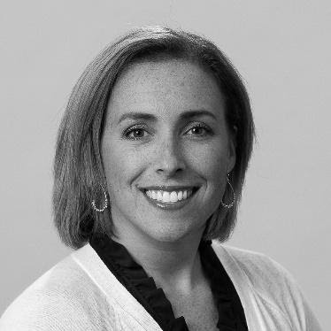

Cate Reich
Security Manager, Accenture Security
Can you describe your background & path to Accenture?
Prior to joining Accenture I worked for the Department of Defense, where a great boss and mentor encouraged me to pursue my career in cybersecurity, which started with me returning to school for my Masters of Science degree in Cybersecurity. During my time with DoD I served as a key member launching several inclusion and diversity initiatives including a STEM Internship program for Historically Black Colleges/Universities and Minority Service Institutions as well as a Girls for Engineering, Math and Science (GEMS) program at a local elementary school.

How do you manage your time and maintain a work-life balance?
What I’ve learned about prioritizing is that when someone asks for your help, make sure you understand as much as you can about the task and time commitment and why they need you specifically. Then ask to get back to them after you evaluate your schedule because time is the most valuable asset you have.
What do you like about the cybersecurity/ tech industry and what ways do you think it could improve?
As for areas to improve, the industry is making great strides in empowering and supporting women as they advance through a cybersecurity career, but we still see a lot of attrition at the midpoint of a woman’s career. Some suggest this is due to women leaving the workforce to start a family, but I recently participated in a research project that interviewed leading female security executives to get their perspective. What was interesting is many indicated women left the career because of uncertain career paths, lack of advocacy at the higher ranks, and a lack of support for their growth and development. All three of these challenges are easy to respond to as an industry and the more we own this and work together, across organizations, to resolve it, the better we will be in the future.
Do you have any advice for students on how they can work on discovering & later maintaining their “authentic self”?
So what I would do early and often, is develop a career profile of what you've done and what you want to do in the future. I like change, and embracing new challenges,and working at Accenture allows me to pivot into new spaces because it’s such a large company that supports all industries and security specializations Don’t be afraid to try something on for size and have the courage to make a change if it's not a good fit for you (personally or professionally). It sounds utopian, but you will know when you’ve come across a place you want to stay and play at, and this is a great thing.
I think we have to invest in ourselves and be intentional about who we look up to. When I find mentors, they fill at least one of these three areas.
- They are someone who I can look up to and follow.
- They need to be someone who I can identify with. Do they share similar challenges or concerns I do? Did they have similar goals? Are they in a similar space in their life, i.e. working mom?
- They are someone who represents the characteristics that I strive for in leadership.